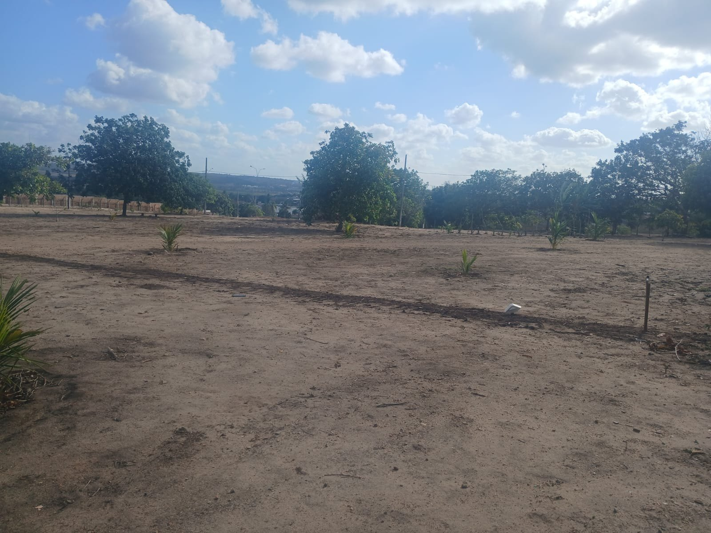
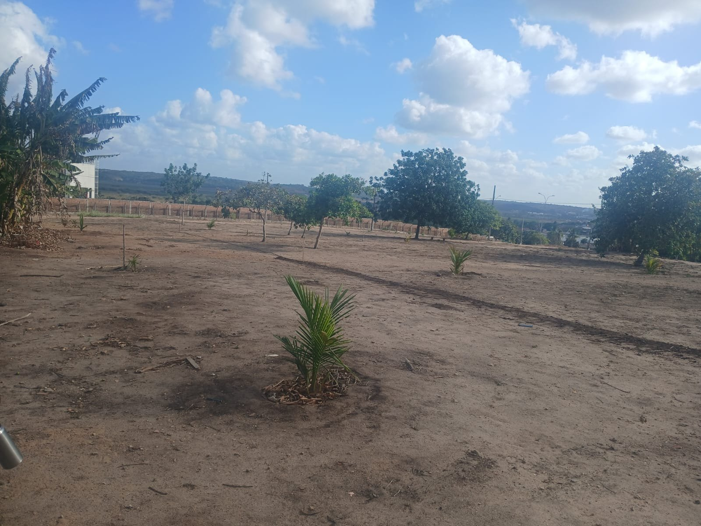
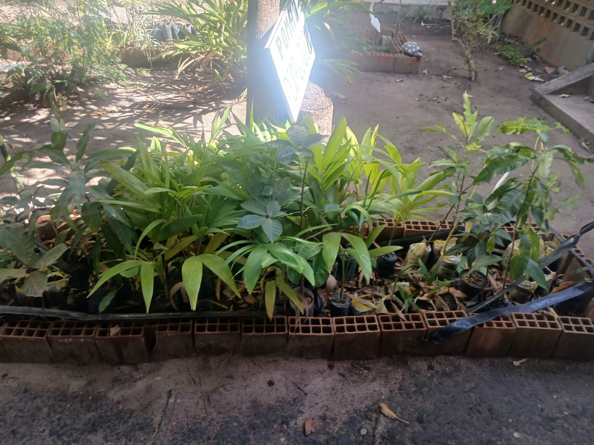
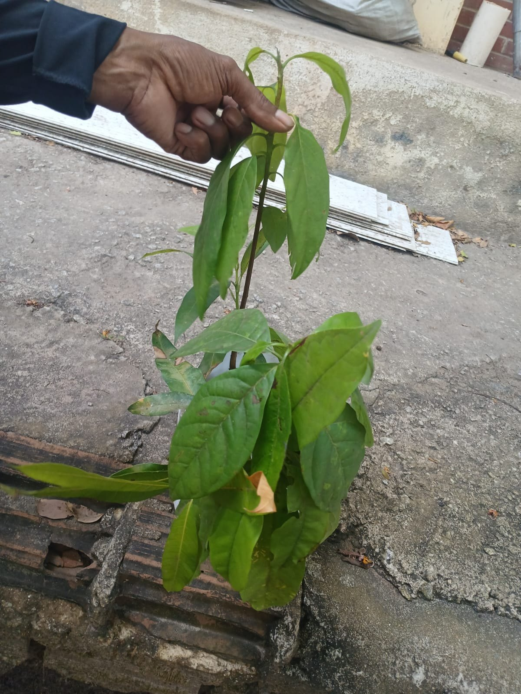

História
Da proposta às primeiras atividades no campus.

Revista educativa · UFPB Campus IV
Conheça o espaço que reúne cultivo de mudas, educação ambiental e atividades para estudantes e escolas no CCAE, em Mamanguape.
Começar a leitura →
Da proposta às primeiras atividades no campus.

O projeto na visão de quem participa dele.

O que se pode aprender pesquisando e cuidando do espaço.
Wellando Costa, ecólogo e colaborador do projeto, convida a comunidade a conhecer o espaço e participar da iniciativa.
Quer conhecer o Pomar com sua turma ou grupo? Envie sua solicitação. A equipe entrará em contato para confirmar a data.
Ver o Pomar no Google Maps ↗